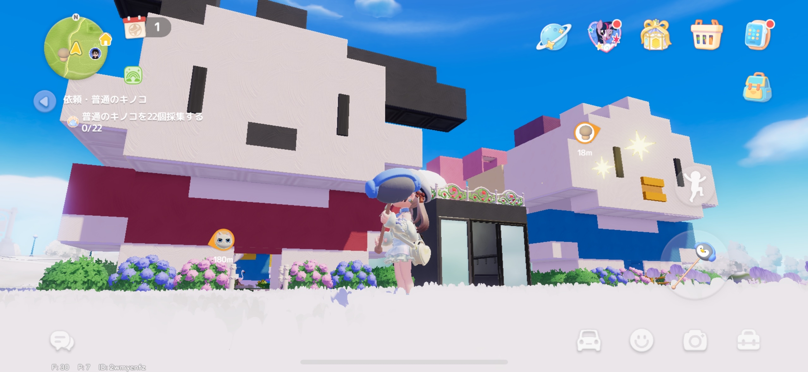
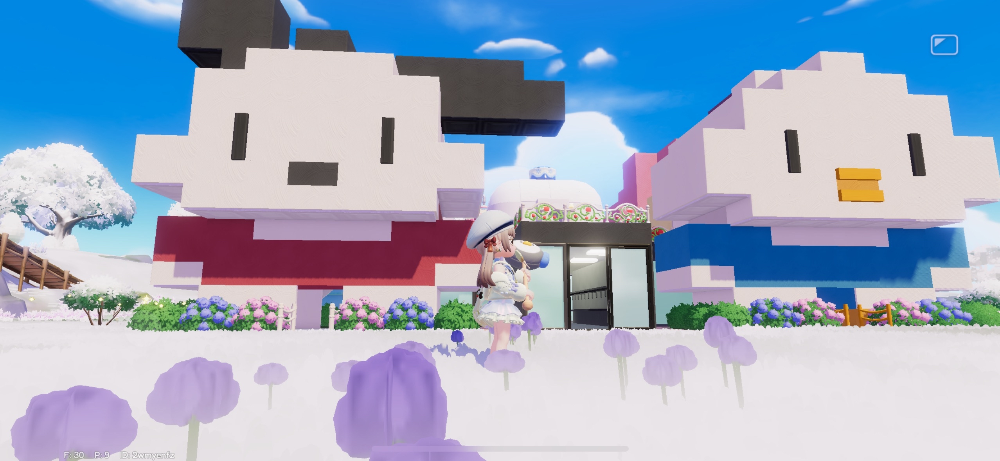
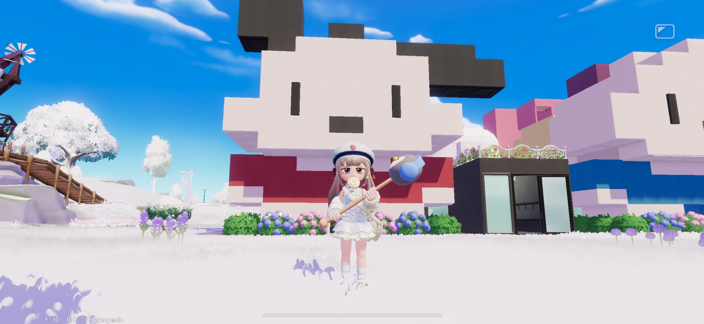
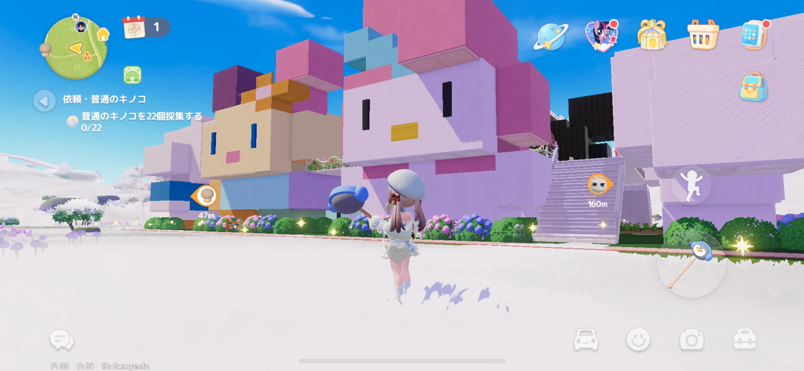
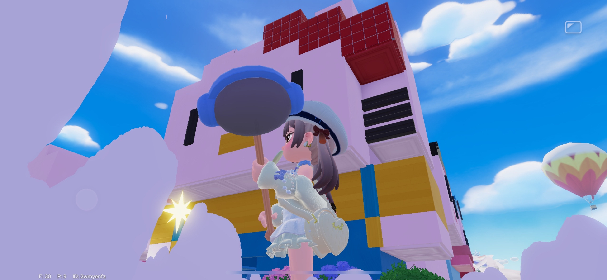
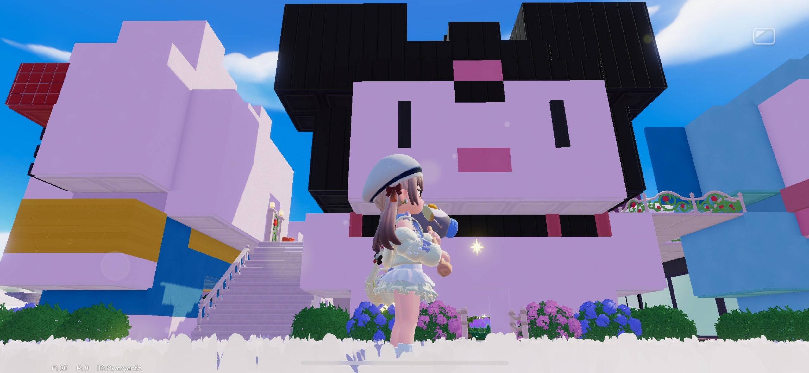
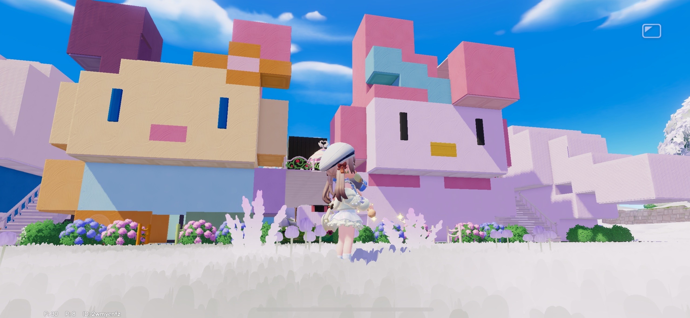
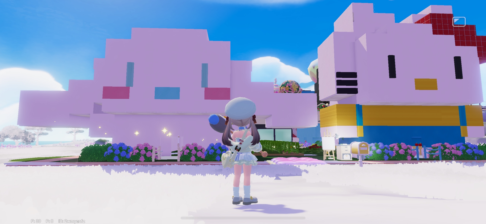

Heartopia（ハートピアスローライフ）建築ガイド
Heartopiaの壁は3種類。高さが違うだけで、どれもペイントで色を変えられる。
サイズ比較（横に並べたイメージ）
高さ上限のイメージ
18プロット（各8×5）を全部解放した状態。ポチャッコの家を中央に置いたレイアウト案。
1マス＝ペイント1区画。ボタンでパーツごとにハイライトできるよ。
右側に壁の種類と高さの対応を表示してるので、組み合わせの参考にしてね。
ポチャッコの外観だけじゃなく、家として機能する中身も大事！
套装（セット）家具を揃えるとバフ（ボーナス効果）がつくので、部屋ごとにカテゴリを統一しよう。
スタミナ回復の必須アイテム。套装にすると起床後に体力再生バフ
家具を自作する製作台。これがないと何も作れない
料理を作る。キッチン套装で失敗率ダウン＋品質UP
アイテム・家具の保管に。序盤から投資しておくと楽
同じカテゴリの家具をまとめて置くと発動。部屋ごとにカテゴリを統一するのがコツ。
| カテゴリ | ボーナス効果 | 置く場所 |
|---|---|---|
| 🛏️ 寝室 | 最大体力UP、睡眠回復UP | 2階 |
| 🍳 キッチン | 料理失敗率ダウン、品質UP | 1階 |
| 🛋️ リビング | 体力消費軽減、回復速度UP | 1階 |
| 🌿 屋外 | 収穫量UP、水やり頻度ダウン | 庭 |
| ✨ デコ | NPCの好感度UP | どこでも |
| 🎵 楽器 | ペット親密度UP | お好みで |
← スクロールで全部見れる

白い顔＋黒の垂れ耳＋赤い衣装。公式の走りポーズを再現

ほぼ同サイズ。ドアは共有スペースにガラスドア。1階のマルーンがよく見える

赤い1階 + 黒フレームのガラスドア。風車・橋のある牧歌的エリア

3軒横並び。前面に紫陽花＋低木の統一ガーデン。サイズ感の参考に

奥行き約8マス確認。リボンが3D飛び出し。装飾パーツの付け方の参考に

ダーク系のクロミ。ポチャッコは白×パステルで対照的に

パステルカラー基調の街並み。花壇が全家共通のスタイル

ドア中央、窓は両サイド対称。この共通パターンを設計図に反映
白（顔/体）+ 黒（耳・目）+ 赤（衣装）
横18 × 高さ15単位 × 奥行き8
公式の走りポーズ！腕と脚が非対称
耳:腰壁 / 顔:低壁×6 / 胴体:普通壁 / 脚:腰壁
中央。黒枠＋ガラスドア
走りの勢いで横に広がる！